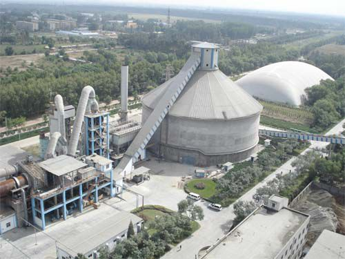

《水泥窑协同处置固体废物污染防治技术政策》 |
|  |
| 一、总则 |
| （一）为贯彻《中华人民共和国环境保护法》等法律法规，防治环境污染，保障生态安全和人体健康，规范污染治理和管理行为，推动水泥窑协同处置固体废物技术装备和污染防治技术进步，促进水泥行业的绿色循环低碳发展，制定本技术政策。 |
| （二）本技术政策所称水泥窑协同处置固体废物是指将满足或经过预处理后满足入窑要求的固体废物投入水泥窑，在进行水泥熟料生产的同时实现对固体废物的无害化处置过程。处置固体废物的类型主要包括危险废物、生活垃圾、城市和工业污水处理污泥、动植物加工废物、受污染土壤、应急事件废物等。 |
| （三）本技术政策为指导性文件，主要包括源头控制、清洁生产、末端治理、二次污染防治以及鼓励研发的新技术等内容，为环境保护相关规划、污染物排放标准、环境影响评价、总量控制、排污许可等环境管理和企业污染防治工作提供指导 |
| （四）利用水泥窑协同处置固体废物，应根据产业结构发展要求、城市总体规划、环境保护规划和环境卫生规划等，结合现有水泥生产设施，合理规划、有序布局。水泥窑协同处置固体废物应作为城市固体废物处置的重要补充形式 |
| （五）水泥窑协同处置固体废物污染防治应遵循源头控制、清洁生产与末端治理相结合的全过程污染控制原则，鼓励采用先进可靠、能源利用效率高的生产工艺和装备及成熟有效的污染防治技术，加强技术引导和精细化管理。水泥窑协同处置固体废物应保证固体废物的安全处置，满足污染物达标排放的要求，不影响水泥的产品质量和水泥窑的稳定运行。 |
| （六）开展协同处置固体废物的水泥企业应强化企业环保主体责任，建立健全环保监测体系和环境管理制度，确保协同处置废物全过程污染物稳定达标排放；完善环境风险防控体系和环境应急管理制度，编制可行的应急预案，积极防范和提高应对突发环境事件的能力。 |
| 二、源头控制 |
| （一）协同处置固体废物应利用现有新型干法水泥窑，并采用窑磨一体化运行方式。处置固体废物应采用单线设计熟料生产规模2000吨/日及以上的水泥窑。本技术政策发布之后新建、改建或扩建处置危险废物的水泥企业，应选择单线设计熟料生产规模4000吨/日及以上水泥窑；新建、改建或扩建处置其他固体废物的水泥企业，应选择单线设计熟料生产规模3000吨/日及以上水泥窑。鼓励利用符合《水泥行业规范条件（2015年本）》的水泥窑协同处置固体废物，拟改造前应符合《水泥窑协同处置固体废物污染控制标准》（GB30485-2013）的要求。 |
| （二）应根据生产工艺与技术装备，合理确定水泥窑协同处置固体废物的种类及处置规模。严禁利用水泥窑协同处置具有放射性、爆炸性和反应性废物，未经拆解的废家用电器、废电池和电子产品，含汞的温度计、血压计、荧光灯管和开关，铬渣，以及未知特性和未经过检测的不明性质废物。 |
| （三）新建水泥窑协同处置危险废物的企业在试生产期间，应按照《水泥窑协同处置固体废物环境保护技术规范》（HJ662-2013）要求对水泥窑协同处置设施进行性能测试，以检验和评价水泥窑在协同处置危险废物的过程中对有机化合物的焚毁去除能力以及对污染物排放的控制效果。利用水泥窑协同处置医疗废物，必须满足《水泥窑协同处置固体废物环境保护技术规范》（HJ662-2013）的相关要求。 |
| （四）处置应急事件废物，应选择具有同类型危险废物经营许可证的水泥窑进行协同处置。如无法满足条件时，应按照当地省级环境保护主管部门批准的应急处置方案，选择适宜的水泥窑进行协同处置。 |
| 三、清洁生产 |
| （一）水泥窑协同处置固体废物，其清洁生产水平应按照《水泥行业清洁生产评价指标体系》（发展改革委公告2014年第3号）的要求，定期实施清洁生产审核 |
| （二）水泥窑协同处置固体废物，应对进场接收、贮存与输送、预处理和入窑处置等场所或设施采取密闭、负压或其他防漏散、防飞扬、防恶臭的有效措施。 |
| （三）固体废物在水泥企业应分类贮存，贮存设施应单独建设，不应与水泥生产原燃料或产品混合贮存。危险废物贮存还应满足《危险废物贮存污染控制标准》（GB18597-2001）和《危险废物收集贮存运输技术规范》（HJ2025-2012）的要求。对不明性质废物应按危险废物贮存要求设置隔离贮存的暂存区，并设置专门的存取通道。 |
| （四）根据协同处置固体废物特性及入窑要求，合理确定预处理工艺。鼓励污水处理厂进行污泥干化，干化后污泥宜满足直接入窑处置的要求。水泥厂内进行污泥干化时，宜单独设置污泥干化系统，干化热源宜利用水泥窑废气余热。原生生活垃圾不可直接入水泥窑，必须进行预处理后入窑。生活垃圾在预处理过程中严禁混入危险废物。 |
| （五）严格控制水泥窑协同处置入窑废物中重金属含量及投加量；水泥熟料中可浸出重金属含量限值应满足《水泥窑协同处置固体废物技术规范》（GB30760-2014）的相关要求。水泥窑协同处置重金属类危险废物时，应提高对水泥熟料重金属浸出浓度的检测频次。严格控制入窑废物中氯元素的含量，保证水泥窑能稳定运行和水泥熟料质量，同时遏制二噁英类污染物的产生 |
| （六）固体废物入窑投加位置及投加方式应根据水泥窑运行条件及预处理情况在满足《水泥窑协同处置固体废物环境保护技术规范》（HJ662-2013）要求的同时，根据固体废物的成分、热值等参数进行合理配伍，保障固体废物投加后水泥窑能稳定运行。含有机挥发性物质的废物、含恶臭废物及含氰废物不能投入生料制备系统，应从高温段投入水泥窑。 |
| （七）水泥窑协同处置固体废物应按照废物特性和水泥生产要求配置相应的投加计量和自动控制进料装置。 |
| （八）应逐步提高协同处置固体废物的水泥窑与生料磨的同步运转率。强化生料磨停运期间二氧化硫、汞等挥发性重金属的排放控制措施，不应采用简易氨法脱硫措施（不回收脱硫副产物）。 |
| 四、末端治理 |
| （一）水泥窑协同处置固体废物设施，窑尾烟气除尘应采用高效袋式除尘器；2014年3月1日前已建成投产或环境影响评价文件已通过审批的协同处置固体废物设施，如窑尾采用电除尘器应持续提升其运行的稳定性，提高除尘效率，确保污染物连续稳定达标排放，鼓励将电除尘器改造为高效袋式除尘器。加强对协同处置固体废物水泥窑除尘器的运行与维护管理，确保除尘器与水泥窑生产百分之百同步运转。 |
| （二）水泥窑协同处置过程中的氮氧化物、二氧化硫等污染物排放控制应执行《水泥工业污染防治技术政策》（环境保护部公告2013年第31号）的相关要求。 |
| （三）水泥窑协同处置固体废物产生的渗滤液、车辆清洗废水及协同处置废物过程产生的其他废水，可经适当预处理后送入城市污水处理厂处理，或单独设置污水处理装置处理达标后回用，如果废水产生量小可直接喷入水泥窑内焚烧处置。严禁将未经处理的渗滤液及废水以任何形式直接排放 |
| （四）水泥企业应对协同处置固体废物操作过程和环保设施运行情况进行记录，其中有条件的项目应纳入企业运行中控系统，具备即时数据查询和历史数据查询的功能。处置危险废物的数据记录应保留五年以上，处置一般固体废物的数据记录应保留一年以上。 |
| （五）水泥企业应建立监测制度，定期开展自行监测。重点加强对窑尾废气中氯化氢、氟化氢、重金属和二噁英类污染物的监测。水泥窑排气筒必须安装大气污染物自动在线监测装置，监测数据信息应按照《国家重点监控企业污染源监督性监测及信息公开办法（试行）》的要求进行公开 |
| （六）水泥窑旁路放风系统排出的废气不能直接排放，应与窑尾烟气混合处理或单独处理。旁路放风排气筒污染物排放限值和监测方法应执行《水泥窑协同处置固体废物污染控制标准》（GB30485-2013）的相关要求。对标准中未包含的特征污染物应符合环境影响评价提出的相关排放限值的要求。 |
| 五、二次污染防治 |
| （一）协同处置固体废物水泥窑的窑尾除尘灰宜返回原料系统，但为避免汞等挥发性重金属在窑内过度积累而排出的窑尾除尘灰和旁路放风粉尘不应返回原料系统。如果窑灰和旁路放风粉尘需要送至厂外进行处理处置，应按危险废物进行管理 |
| （二）生活垃圾和城市污水处理污泥的贮存设施应有良好的防渗性能并设置污水收集装置。贮存设施中有生活垃圾或污泥时应处于负压状态运行 |
| （三）污泥干化系统、生活垃圾贮存及预处理产生的废气应送入水泥窑高温区焚烧处理或在干化系统中安装废气除臭设施，采用生物、化学等除臭技术处理后达标排放。在水泥窑停窑期间，固体废物贮存及预处理产生的废气、污泥干化系统产生的废气须经废气治理设施处理后达标排放。 |
| 六、鼓励研发的新技术 |
| （一）协同处置固体废物的水泥窑在生产过程中的污染物减排技术。 |
| （二）提高协同处置固体废物量的水泥窑高效利用技术，如大投加量固废离线燃烧系统 |
| （三）协同处置固体废物的高效预处理技术，如高质量垃圾衍生燃料（RDF）制备技术；降低水泥窑协同处置危险废物环境风险的预处理技术。 |
| （四）粉尘、二氧化硫、氮氧化物、汞等多种污染物高效协同脱除技术 |